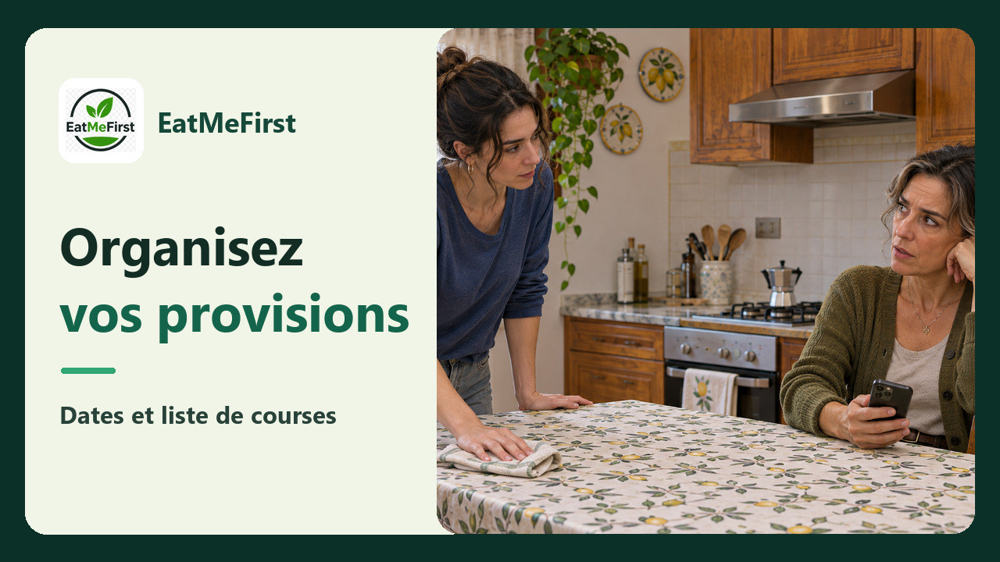

Envie d’en savoir plus ?
Découvre ce que tu peux faire, avec des exemples et des guides expliqués pas à pas.
Découvrir le fonctionnementEATMEFIRST · MOINS DE GASPILLAGE, PLUS D’ORDRE À LA MAISON
Un produit oublié au fond du réfrigérateur… et cette odeur quand on ouvre la porte. EatMeFirst t’aide à organiser les aliments et les autres produits de la maison.
Avec EatMeFirst, tu gardes les dates dans l’ordre, tu sais ce que tu as à la maison et tu retrouves les produits terminés dans ta liste de courses.

BIENVENUE, TU ES AU BON ENDROIT !
Ce site te présente EatMeFirst. Découvre son fonctionnement ou entraîne-toi avec des réserves fictives. Quand tu veux commencer, le bouton pour utiliser l’application se trouve en bas de la page.
Découvre ce que tu peux faire, avec des exemples et des guides expliqués pas à pas.
Découvrir le fonctionnementEssaie les commandes avec Max, Eva et Leo et des produits fictifs. Tu peux te tromper sans toucher à tes vraies réserves !
Apprendre en jouantEATMEFIRST
Les aliments, mais aussi les produits ménagers, pour les animaux et les autres achats de la maison. Voici nos souhaits de départ. Ce sont aussi les tiens ?
«Je ne veux pas donner mon e-mail, mon compte Google ou mes coordonnées. Ni inventer un nouveau mot de passe.»
Tu peux commencer à organiser tes réserves sans créer de compte.
«Je veux garder mes produits, quantités et consommations sur mon téléphone ou mon PC.»
Produits, quantités et notes restent sur ton téléphone : la liste de tes réserves ne nous est pas envoyée. Quand tu recherches un code-barres, l’application envoie ce code aux catalogues externes pour trouver les informations du produit, pas le contenu de tes réserves.
«Je veux savoir quoi faire, même sans être spécialiste.»
Les boutons info expliquent les fonctions. Max, Eva et Leo t’accompagnent avec des mots simples et quelques plaisanteries.
«Et les légumes du marché, le vrac ou mes préparations maison ?»
Écris le nom, la quantité, l’emplacement et, si nécessaire, une date. Cela vaut aussi pour les confitures maison, les restes et les portions congelées.
«Placard, réfrigérateur, garage… sans devoir tout retenir !»
Choisis tes emplacements et catégories. Déplace seulement quelques unités d’un lot et retrouve leur emplacement.
«Une moitié de saucisson ou de bouteille est encore à la maison !»
Retire des unités entières ou indique le contenu restant. Un produit ouvert ne doit pas disparaître de l’inventaire.
«Je veux voir les dates approcher avant de retrouver un produit oublié au fond du réfrigérateur.»
L’inventaire classe les dates et les alertes attirent ton attention. Les dates impératives et indicatives sont distinguées.
«Je veux retrouver les produits terminés et ajouter ce qui me vient à l’esprit.»
Les produits déclarés terminés passent dans la liste. Ajoute tes notes et coche tes achats : les lignes s’assombrissent, sont barrées et passent en bas.
AH, J’ALLAIS OUBLIER…
Oui ! Tout ce que nous venons de te présenter est utilisable gratuitement. Ce n’est pas un essai de 30 jours !
« Où est le piège ? » Héhé… pour l’instant, il n’y a même pas de publicité. Si nous en ajoutons un jour, nous la voulons discrète.
L’enregistrement automatique et immédiat des modifications sur votre téléphone restera toujours gratuit.
Voyons plus en détail comment cela fonctionne !
Entraîne-toi avec des produits fictifs, sans toucher à tes vraies réserves.

La présentation sur YouTube · ~5 min
Des guides pas à pas avec Max, Eva et Leo, des conseils pratiques et un aperçu des fonctionnalités à l’étude. L’abonnement à la chaîne est gratuit.
Tes réserves, les dates et ta liste de courses sur ton téléphone. Sans installer de programme ni créer de compte.